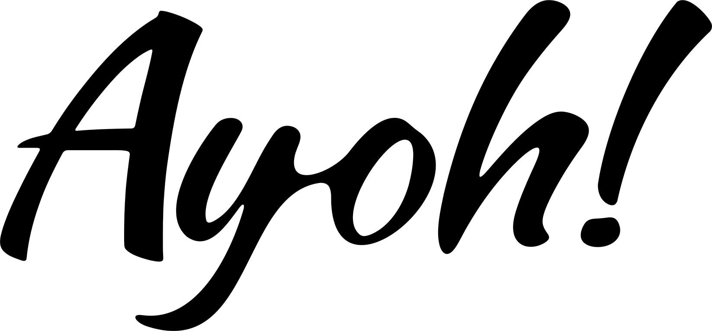
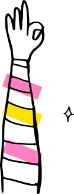
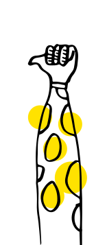
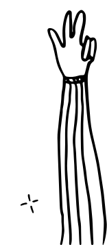
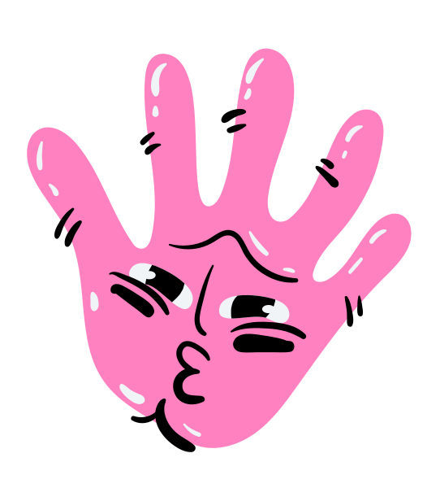
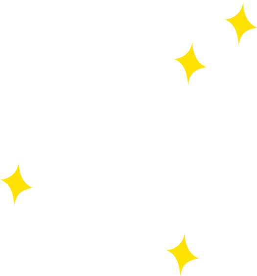
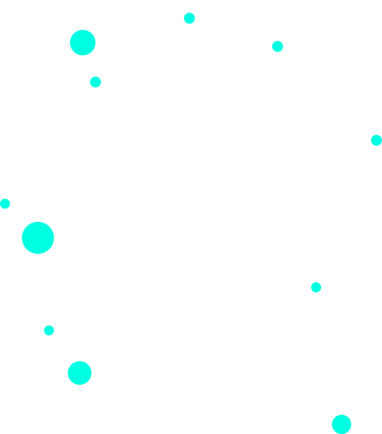
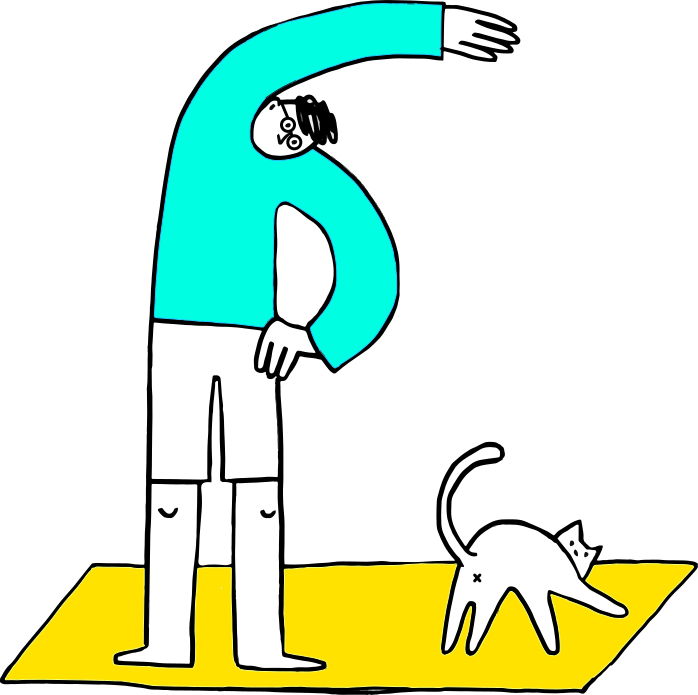

3am Design Studio portfolio




Hundreds of works,
soul in every pixel.
3am.'">
is a mindset, not a schedule.
is the vibe that clears my head.
is the vibe that clears my head.
What we do.



MORE & MORE
Copyright © 2026 3am Design Studio. All rights reserved.

2026: THE YEAR OF LAUNCH.
WHILE OTHERS FEAR THE MACHINE,
I SYNCHRONIZE WITH IT.
By mastering the latest tech, I deliver smarter, faster & more flexible design solutions that fit your budget, without compromising the soul of the craft.
WANT TO COLLABORATE?
WORK WITH 3AM.
Copyright © 2026 3am Design Studio. All rights reserved.